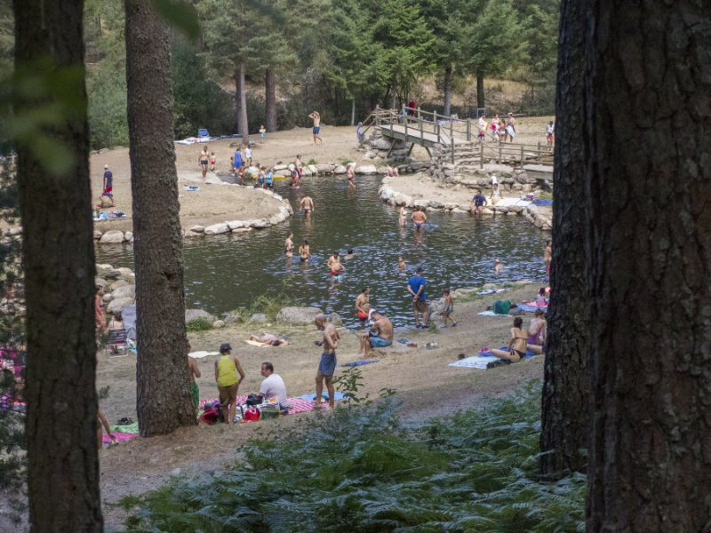
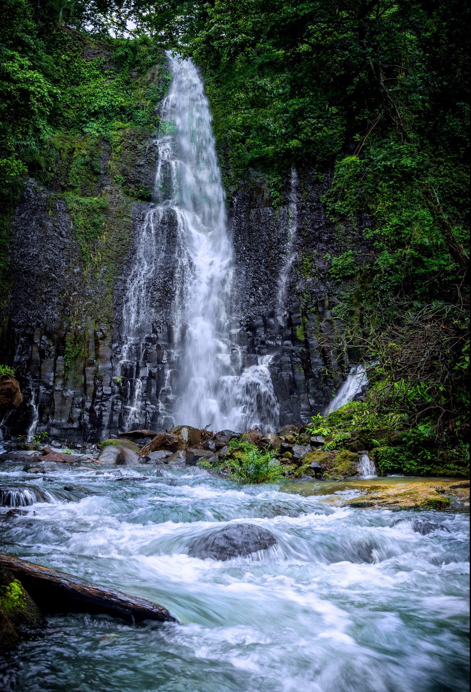
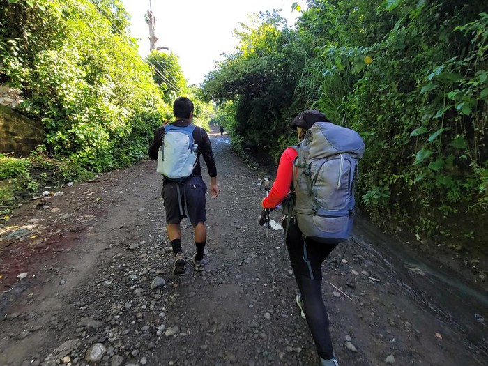

Piscinas Naturales
Disfruta de nuestras piscinas de agua cristalina, rodeadas de la naturaleza.

Tobogán acuático
Disfruta de los toboganes que ofrece el lugar.

Zonas de Picnic
Pasa un día con tu familia y amigos en nuestras áreas de picnic.

Piscinas para niños
Los más pequeños pueden disfrutar de nuestros juegos y zonas recreativas seguras.

Cascadas
Maravíllate con las cascadas naturales que adornan el paisaje del parque.

Senderismo
Explora los senderos naturales mientras disfrutas del aire fresco y vistas panorámicas.